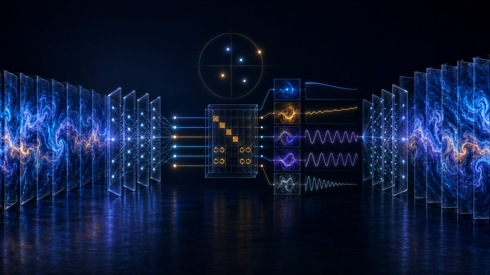

My research is organized into three programs. Each brings information theory to a different part of the same problem: the measures we use to quantify information, the causes we recover from data, and the way networks behave over time.
Measuring information in continuous, real-world data.
I develop entropy and information measures that work directly on continuous state spaces and stay reliable when data carries outliers or heavy tails. This is where I contribute new tools to information theory rather than only applying them.
Finding the true drivers behind data, and models you can trust.
I recover causal structure and governing equations from data that is noisy, sparse, or limited, using information-theoretic system identification. Interpretability and robustness come first, so the models can be reasoned about and relied on.
Reading the structure and the warning signs in connected systems.
I study how coupled systems synchronize, where their essential structure lives, and how to detect critical transitions before they arrive. Recent work asks when a directed network can be recovered from its dynamics alone.